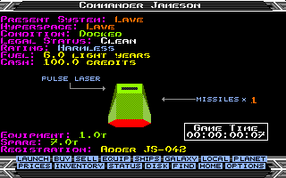
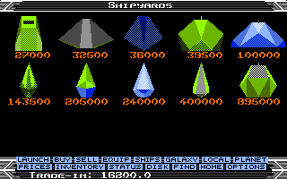

Hover to see the 16-bit version. Click, tap or press Enter to keep either image.
Trade your way to a better ship. Take a delivery across the galaxy. Hear the traffic around you. Find your own way to ELITE.
A familiar universe. More ways to fly.
Return to top △Elite — Amiga & Atari ST brings an expanded version of classic Elite to the Motorola 68000. The enhanced Atari ST game and the independent native Amiga port share the same gameplay features: 13 flyable hulls, equipment trading, Special Cargo deliveries, ship registrations and a living radio channel.
The project builds on the original Atari ST source. The Amiga version has its own graphics, input, disk handling and Paula sound, including music from the original Amiga release. Ideas from Elite: Unbound are adapted to these two versions.
The current default commander starts in an Adder, with 100 Cr, a front Pulse Laser, one missile and a full 6.0-light-year fuel tank. There is no prescribed career: trade, explore, hunt bounties, salvage cargo or take your chances on the wrong side of the law.

Ship choice matters. Speed, handling, fuel range, hold space, missile capacity and available laser mounts differ by hull. A ship flown by the player and the same hull flown by AI share their defensive statistics and flight limits.
What changes in this edition?
Return to top △- 13 purchasable ships. Fly anything from a Sidewinder or Adder to a Python, Boa or Anaconda. Availability depends on the system.
- Buy and sell equipment. Each device and mounted laser occupies cargo space. Prepare your loadout before exchanging hulls.
- Shared ship systems. Front and rear shields, energy banks, recharge and hull resistances apply to both player and AI ships. Missiles deal damage rather than guaranteeing a kill.
- More varied encounters. Traders, convoys, pirates and police select targets within the existing faction rules, including fights between AI ships.
- Individual AI weapons. Each ship keeps its own laser. Pulse shots are separated; Beam and Military lasers fire continuous bursts.
- Radio traffic. Station clearances, departure greetings and cargo warnings join trader hails, pirate threats, police challenges and alien transmissions.
- Special Cargo. Accept a paid delivery on Buy / Special, follow its destination on the charts and collect the reward when you dock.
- Ship identity. Identify contacts with I. A hidden registration can help with pirates, but some stations refuse scrambled IDs.
- Cargo jettison. Eject unwanted goods from Inventory and scoop cargo with its original contents. Dumping near most stations is illegal.
- Visual choices. Original or grey alternate artwork, optional distant stars and procedural planet surfaces. Amiga builds also offer wide and high-resolution views.
- Native sound. Atari PSG or Amiga Paula effects, continuous beam sounds, a short radio beep and optional RCS/throttle audio.
- The original missions remain. New trading and communication systems accompany the existing story progression.

Choose your machine
Return to top △Amiga
Start with the framed ELITE.ADF or grey ELITE_ALT.ADF. The standard target is a 68000 Amiga with 1 MB RAM; 512 KB Chip RAM plus 512 KB expansion RAM is supported. Accelerated machines can use larger display modes.
Atari ST
Use ELITE.ST or grey ELITE_ALT.ST on an ST with 1 MB RAM, or in an emulator. The unpacked game also starts through ELITE.TOS with its data files alongside it.
From Elite: Unbound to the 68000
Return to top △This site carries forward the black-and-yellow layout of the companion Elite: Unbound website. The same enthusiasm for the original game now extends to the Atari ST and Amiga: a more varied fleet, more choices at the station and more life between the stars.
The original game, art, music and source contributions remain credited to their creators. Read the credits and project foundations, or explore the source repository.
Right on, Commanders!